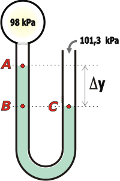

NO ME SALEN
EJERCICIOS RESUELTOS DE FÍSICA DEL CBC
FLUIDOS - PRINCIPIO DE ARQUÍMEDES |
|

|
| |
FIS H.13) Una ampolla contiene un gas a una presión de 98 KPa. Dicha ampolla está unida a un extremo de un tubo en forma de U que contiene agua en su interior. El otro extremo está abierto a la atmósfera. La presión atmosférica es normal.
Indicar cuál es la única opción correcta respecto a la altura que tiene el agua en las ramas del tubo:
a) El agua tiene la misma altura en ambas ramas del tubo
b) La diferencia de altura entre ambas ramas es de 33 cm y en la rama en contacto con la atmósfera la altura es mayor.
c) La diferencia de altura entre ambas ramas es de 33 cm y en la rama en contacto con la atmósfera la altura es menor.
d) La diferencia de altura entre ambas ramas es de 13 cm y en la rama en contacto con la atmósfera la altura es mayor.
e) La diferencia de altura entre ambas ramas es de 33 cm y en la rama en contacto con la atmósfera la altura es menor.
f) No se puede saber en qué rama el agua alcanza mayor altura. |
|
| Si no hago un esquema de la situación que describe el enunciado no sabría cómo explicarte mi razonamiento... ¡pero tampoco sabría cómo resolverlo! Los esquemas son necesarios. |
|
|
|  |
Acá lo tenés. El agua salió un poco verdosa, será por los días que lleva estancada en este esquema.
Es cierto que hice el esquema sabiendo el resultado, pero si vos hacés un esquema equivocado no dudes que haciendo los razonamientos correctos tenés que llegar a descubrir el error y -si fuese necesario- rehacer el esquema. Las líneas punteadas son líneas horizontales.
Mirá el punto A: ahí no cabe duda de que la presión del agua es la misma que la del gas de la ampolla, 98 kPa (los gases son tan "livianos", que no presentan diferencias de presión dentro de los recipientes).
Ahora mirá el punto B. Coinidirás conmigo que B está a mayor profundidad que A en esa columna de agua... entonces B debe estar a mayor presión que A. ¿Y cuánto mayor? |
|
|
|
Bueno... ¡a la misma presión que el agua en el punto C! Eso es porque B y C se hallan a la misma profundidad (o si querés, al mismo nivel) dentro del mismo cuerpo de agua. Y el punto C se halla a la misma presión que la atmósfera normal, o sea, a 101,3 kPa. De modo que el punto B se halla a esa presión y la diferencia de alturas de la que nos habla el enunciado es, justamente, la diferencia de altura entre A y B, cuyas presiones ya conocemos.
Apliquemos el principio general de la hidrostática:
ΔPrAB = ρH2O g Δy
De donde:
Δy = ΔPrAB / ρH2O g
Δy = (101.300 Pa — 98.000 Pa) / 1000 kg/m³ 10 m/s²
Δy = 0,33 m
|
|
|
|
La diferencia de altura entre ambas ramas es de 33 cm y en la rama en contacto con la atmósfera la altura es menor. |
opción c) |
|
|
|
|
|
|
| |
|
|
| DESAFÍO: ¿Y cuánto tendría que valer la presión del gas dentro de la ampolla para que no haya diferencia de altura en las columnas de agua? |
|
 |
| Algunos derechos reservados.
Se permite su reproducción citando la fuente legítima, o sea, este sitio. Última actualización
oct-19. Buenos Aires, Argentina. |
|
|
| | |
|
|